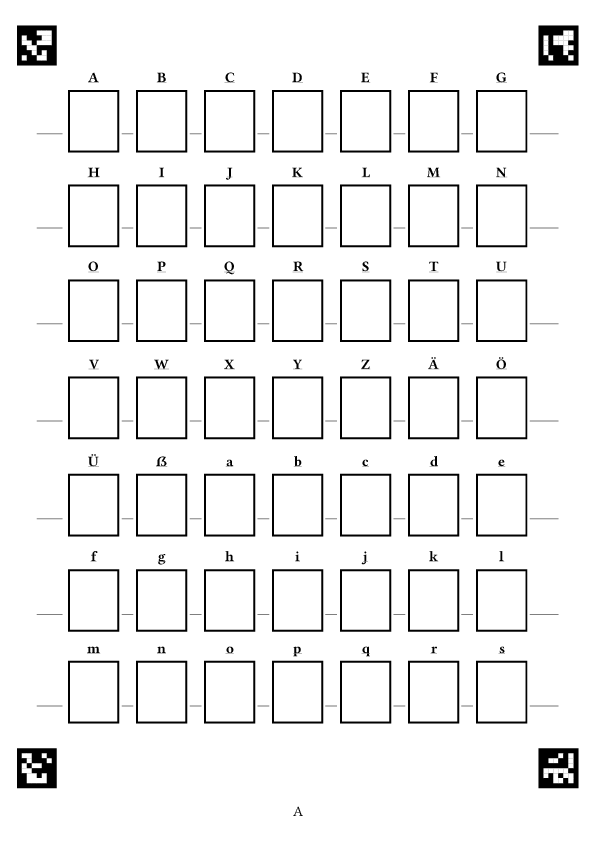
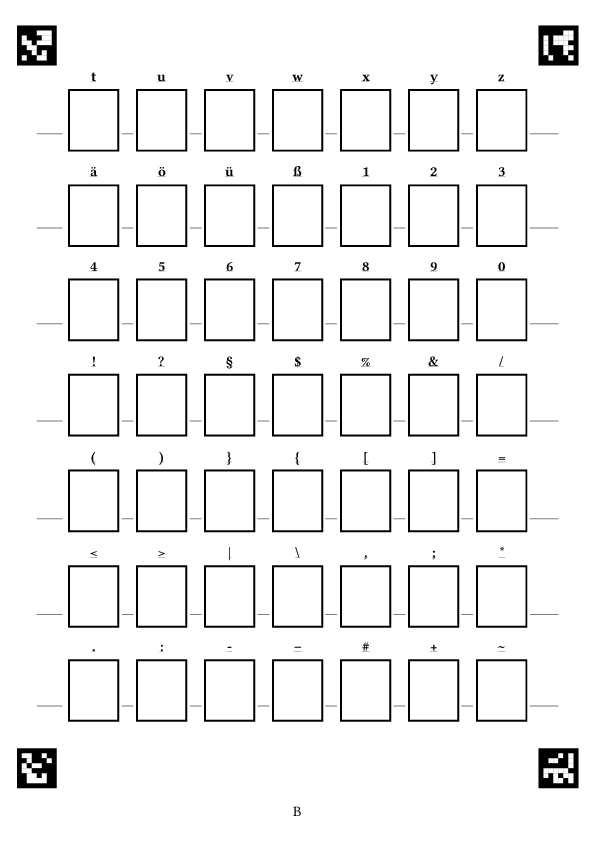
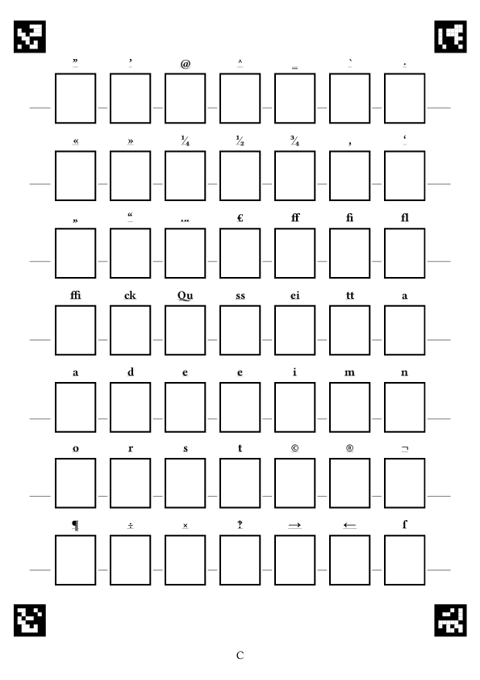
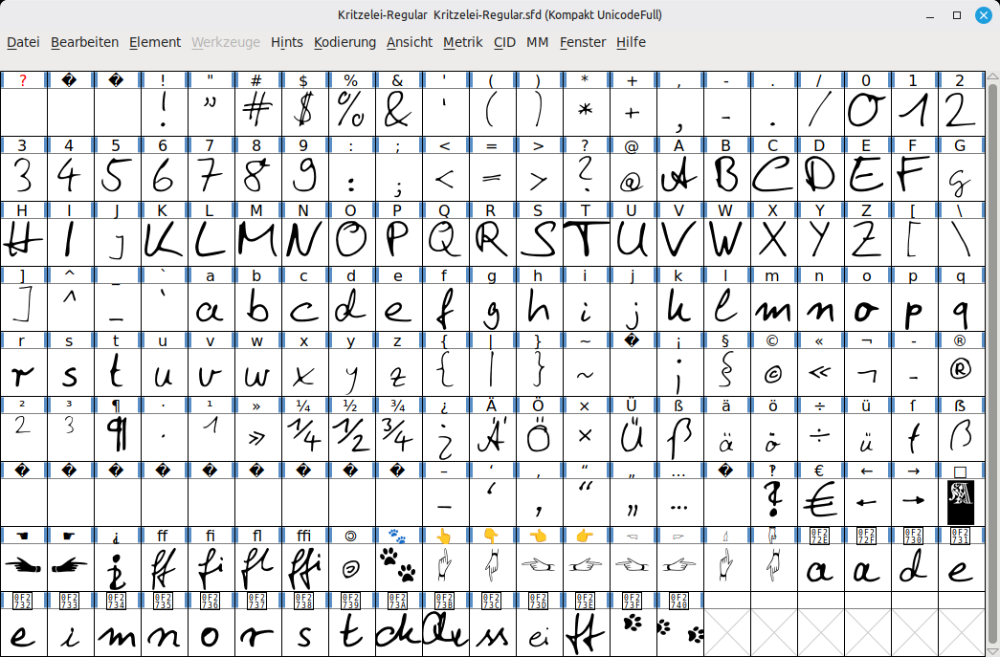

Weiterentwicklung von Hand2Font.
Von handgekritzelten Zeichen zum weiterbearbeitbaren Font. Drei Blatt mit je 49 Kästchen stehen bereit für die jeweiligen Zeichen. Sind die Kästchen ausgefüllt, können die Bögen per Foto oder Scan umgewandelt werden.
threshold/Schwellwert eine Umwandlung in Schwarz-Weiß
manuell durchgeführt werden und die Erkennung in den nächsten Schritten
dadurch verbessert werden.*.jpg.A.jpg, B.jpg und
C.jpg.Schriftname.txt den
Wunschnamen der Schrift.Für die Weiterverarbeitung gibt es ein Skript zum Entzerren und
Zuschneiden der Glyphen-Vorlage. Hernach werden die Kästchen per
opencv erkannt, der Inhalt der Boxen dann ausgeschnitten
und die vorliegenden Einzelbilder der Kästcheninhalte in
*.ppm-Dateien umgewandelt um diese dann per
potrace zu vektorisieren. Die erstellten
*.svg-Dateien werden im nächsten Schritt an vorgesehenen
Positionen im Font platziert und eine
*.sfd-Datei erstellt.
Die automatische Umwandlung der Zeichen soll einige Schritte bei der
Erstellung einer eigenen Schrift mit Fontforge
beschleunigen. Es wartet auf jeden Interessierten aber noch genügend
(Fein-)Arbeit bei der Verbesserung der automatisch erstellten
*.sfd-Datei.



Bei der Erstellung des Fonts werden bzgl. der eigenen Zeichen noch weitere Einstellungen und Umwandlungen vorgenommen:
UnicodeFull1.0Regularfontname, familyname und
fullnamefont.comment = 'FONT_COMMENT'font.copyright = 'FONT_LICENSE'2048cubicstylistic setsliga, normale Ligaturendlig, discretionary ligatures.notdef-Quisquiliepython3 Kritzelei-Oberflaeche.py öffnet ein Fenster, das
in vier Schritten durch die Umwandlung führt:
Output/<Name>), solange er nicht von Hand
geändert wurde. Vor dem Überschreiben vorhandener Dateien wird
nachgefragt.Die Oberfläche ruft dieselben Skripte auf, die auch einzeln benutzt werden können. Das Protokoll im unteren Teil des Fensters zeigt jeden Aufruf und alle Ausgaben, die Befehle lassen sich von dort auch in die Kommandozeile übernehmen.
In den Ordner Kritzelei-Bilder-Original kommen die
Fotos/Scans der ausgefüllten Kritzelei-Zeichenvorlage.
Inhalt dann dort:
Kritzelei-Bilder-Original/A.jpgKritzelei-Bilder-Original/B.jpgKritzelei-Bilder-Original/C.jpgMittels
python3 Kritzelei-Bilder-Vorbereitung.py -s Kritzelei-Bilder-Original
wird dann der Ordner nach jpg-Dateien inspiziert und die drei Dateien im
Ordner Kritzelei-Bilder-Vorbereitung beschnitten und
entzerrt abgelegt.
Möglicher Inhalt dort:
Kritzelei-Bilder-Vorbereitung/A.jpgKritzelei-Bilder-Vorbereitung/B.jpgKritzelei-Bilder-Vorbereitung/C.jpgAuch die einzelne Umwandlung per
python3 Kritzelei-Bilder-Vorbereitung.py -f A.jpg ist
möglich, der Dateiname ist dann auf den Ordner
Kritzelei-Bilder-Original bezogen. Mit
-o Ordner lässt sich ein anderer Zielordner wählen, mit
--ohne-vorschau werden keine Vorschaufenster geöffnet.
Fehlt auf einem Bild eine der vier Randmarken, wird das gemeldet und das
Bild übersprungen.
Wollen wir nachsehen, ob die Glyphen in den jeweiligen Kästen
ordentlich und in ordentlicher Reihenfolge erkannt werden – das ist ja
durchaus sehr wichtig für den nächsten Schritt – so können wir dies mit
python3 Kritzelei-Bilder-Fehlersuche.py -s Kritzelei-Bilder-Vorbereitung
tun.
Die Fehlersuche verwendet genau dieselbe Kästchenerkennung wie der
nächste Schritt. Für jeden Bogen wird ausgegeben, ob alle Kästchen
sicher erkannt wurden; unsichere Kästchen werden mit Nummer und Zeichen
genannt. Im Fenster zeigt Blau das Soll-Raster der Vorlage, Grün den
gefundenen Rahmen (Orange: Lage geschätzt) und Rot den Ausschnitt, der
zur Glyphe wird. Mit ESC (oder einer anderen Taste) geht es
zum nächsten Bogen. Mit --speichern Ordner werden die
markierten Bilder stattdessen als Dateien abgelegt.
Passt dies, geht es weiter. Grundlegend hier zwei Aufrufe, alle
Einstellmöglichkeiten zeigt
python3 Kritzelei-wird-Schrift-Scan2SVG.py --help:
Hier also die vorbereiteten Bilder aus
Kritzelei-Bilder-Vorbereitung holen (A,B,C) und in den
Ordner Output/Kritzelei-01 mit Schriftnamen
Kritzelei-01 hinein umwandeln … die Glyphenbilder, deren
Umwandlung und eine weiterverwendbare .sfd erzeugen.
--rmppm, --rmsvg oder --rmjpg
entfernt nämliche Zwischenschrittdateien.
python3 Kritzelei-wird-Schrift-Scan2SVG.py --scans Kritzelei-Bilder-Vorbereitung/ -o Output/Kritzelei-01 -n Kritzelei-01 --rmppm
Ein bisschen mit den Optionen wird man schon spielen müssen, hier eine Variante, welche gerade bei bestimmten Stiftverwendungen und Stiftfarbenverwendungen erfolgreich ist. Aber auch hier nochmals der Hinweis, dass eine vorherige Bearbeitung hin zu kontrastreichem schwarz/weiß im Bildbearbeitungsprogramm hilfreich ist.
python3 Kritzelei-wird-Schrift-Scan2SVG.py --scans Kritzelei-Bilder-Vorbereitung/ -o Output/Kritzelei-02 -n Kritzelei-02 --rmppm --buntstift
Statt eines Ordners können die Bögen auch einzeln angegeben werden,
fehlende Bögen werden dabei übersprungen:
-a A.jpg -b B.jpg -c C.jpg (dann bitte mit
-o Ordner).
--erkennung raster|kontur: Verfahren der
Kästchenerkennung. raster (Standard bei Vorlage 2) geht vom
bekannten Raster der Vorlage aus und sucht jede Rahmenlinie nur in der
Nähe ihrer erwarteten Lage. Das ist robust gegen Zeichen, die den Rahmen
berühren, gegen ungleichmäßiges Licht und gegen leicht gewölbtes Papier.
Kann eine Linie nicht gefunden werden, wird ihre Lage geschätzt und eine
Warnung ausgegeben, statt abzubrechen. kontur ist das
bisherige Verfahren (freie Suche nach Vierecken, Standard bei Vorlage
1).
-t 100: Schwellwert für --erkennung kontur,
zwischen 0 und 255 (Standard: 100). Die Raster-Erkennung bestimmt den
Schwellwert lokal selbst.
-o Ordner: Ordnername und Ziel, in welchem die Dateien
abgelegt werden (Standard: <scans>/FONT).
-n KritzeleiFont: Wie soll der Font später heißen?
(Standard: Kritzelei)
-v 2: Version der Zeichenvorlage (Standard: 2, die
aktuelle Vorlage mit 147 Zeichen).
--blur 3: Weichzeichner für die ausgeschnittenen
Zeichen, ungerade Zahl, 0 = aus.
--rmppm: *.ppm-Dateien im Erstellungsordner
entfernen.
--rmjpg: *.jpg-Dateien im Erstellungsordner
entfernen.
--rmsvg: *.svg-Dateien im Erstellungsordner
entfernen.
--buntstift: bei Buntstift, Farbe, uneinheitlicher
Deckkraft, … (potrace mit --blacklevel 0.6 und
--alphamax 1.34)
--ptdefault: statt --buntstift. potrace mit
Standardeinstellungen, führt zu genauerer Umsetzung.
--skel: erzeugt im Unterordner SKEL
zusätzlich einen Font mit einheitlicher Strichstärke.
--breite-anpassen: gleicht die Strichbreiten der Zeichen
einander an. Ohne diese Option werden die Striche im Font
unterschiedlich dick, weil jedes Zeichen auf die Höhe seiner Klasse
skaliert wird – ein klein gezeichnetes „o“ wird viel stärker vergrößert
als eine groß gezeichnete Klammer. Vor dem Vektorisieren wird daher je
Kästchen die Strichbreite gemessen, die spätere Skalierung vorhergesagt
und der Strich entlang seiner Kontur so verdünnt oder verdickt, dass er
im Font die Zielbreite erreicht. Anders als bei --skel
bleibt der Charakter des Strichs erhalten. Reine Punkte (.,
: …) bleiben unverändert. Optional mit Anteil:
--breite-anpassen 0.5 nähert nur zur Hälfte an (Standard
1 = alle gleich breit).
--strichbreite 90: Zielbreite in Font-Einheiten (em
2048) für --breite-anpassen (Standard: Median aller
Zeichen; zum Vergleich: im Beispiel-Font liegen die Breiten ohne
Anpassung etwa zwischen 45 und 170).
--ohne-font: nur die SVG-Dateien erzeugen. Der Font kann
dann später separat erstellt werden:
python3 Kritzelei-wird-Schrift-SVG2Font.py -svg Output/Kritzelei-01 -n Kritzelei-01
Die erzeugte *.sfd-Datei wird anschließend in FontForge
geöffnet und dort weiterbearbeitet und als OTF/TTF/WOFF2 exportiert.
Die Skripte sind schlanke Aufrufe, die eigentliche Arbeit steckt im
Ordner kritzelei/:
kritzelei/glyphen.py: welches Zeichen in welchem
Kästchen steht (Versionen der Vorlage) und die Höhenklassen für die
Größenanpassungkritzelei/bild.py: Entzerren anhand der
ArUco-Randmarken und Kästchenerkennung über Konturen (OpenCV)kritzelei/raster.py: Kästchenerkennung über das
Soll-Raster der Vorlage mit Feinjustierung je Rahmenliniekritzelei/vektor.py: Ausschneiden der Zeichen und
Vektorisieren mit potracekritzelei/strich.py: Messen und Angleichen der
Strichbreite (--breite-anpassen)kritzelei/font.py: Aufbau der FontForge-Datei mit allen
Zusätzen (magic)kritzelei/symbole.py: eingebettete Zeichen
(Katzenpfote, .notdef, Zeigehände)kritzelei/oberflaeche.py: das Fenster der
Bedienoberfläche (Tk)kritzelei/auftrag.py: übersetzt die Einstellungen der
Oberfläche in Aufrufe der Skriptekritzelei/schriftprobe.py: Schriftprobe für den
Ergebnis-SchrittTests mit den Beispielbögen: python3 -m pytest tests

Hierzu am besten auf der github-Seite zu Kritzelei wird Schrift die Projektdaten herunterladen:
potracelibfontforge3python3python3-skimagepython3-fontforgepython3-opencvpython3-matplotlibpython3-pilpython3-tk und python3-pil.imagetk (nur
für die Bedienoberfläche)fontforge oder das Flatpak
org.fontforge.FontForge (nur für den Knopf „In FontForge
öffnen“; fontforge-nox hat keine grafische Oberfläche)python3-pytest (nur für die Tests)Getestet mit Python 3.12, OpenCV 4.6 und FontForge 20230101. Neuere OpenCV-Versionen (ab 4.7, geänderte ArUco-Schnittstelle) werden ebenfalls unterstützt.
Viel Vergnügen & happy fonting,
Christoph Pfeiffer